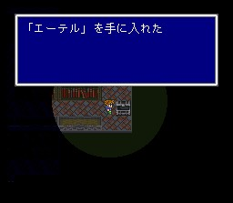
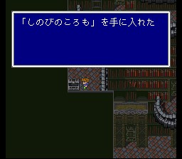
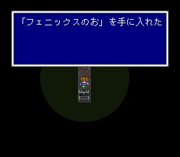

고대도서관
성이 폭발하면서 날아간 벽을 통하여 고대도서관으로 가는 길이 열려 있습니다. 가는 길에 있는 서쪽 사막에서는 도루무키마이라라는 강적이 나타납니다. 이 녀석에게 아쿠아브레스라는 유용한 청마법을 배울 수 있습니다. 주의해서 상대하시길..
고대도서관 주위에는 미스릴드래곤이 나타납니다. 조종을
이용하여 융합을 배워둡시다.
들어가기 전에
전원의 레벨을 살펴보세요. 고대도서관에서는 유명한 청마법인 레벨5데스가
나타납니다. 전원의 레벨이 5의 배수인 채로 이 마법을 맞으면 전멸하게 되니 적어도
한 사람은 레벨이 5의 배수가 되지 않도록 레벨을 조정하세요. 하지만 레벨이 5의
배수인 동료도 있어야 레벨5데스를 배울 수 있으니 그
점 유의하세요.
자, 준비가 됐으면 고대도서관으로 들어갑시다. 들어가면 학자들이 시드의 손자인 미드의 존재를 이야기해 주는데 도서관 지하에서 실종되었다고 합니다. 위층에는 회복의 물이 있으니 사용하시고.. 최상층에 있는 책 중에 한 권은 지하에 나타나는 페이지32와 페이지64가 나타납니다. 이들에게 에어로라와 레벨5데스를 미리 배워두는 것도 좋겠지요. 나중에 배워도 됩니다만..
고대도서관 지하로 가봅시다. 책장들이 이리저리 막혀있는데 A버튼을 이용해서 잘 시도해 보면 길이 뚫립니다. 가면서 상자 챙기시고.. 에어로라와 레벨5데스 외에도 256페이지에게 가드오퍼와 달의 피리라는 다소 효용이 낮은 청마법들을 배울 수 있습니다. 가다 보면 책장 하나가 못 들어가게 방해를 하는데, 먼저 다른 곳에서 이프리트를 상대하여 이긴 후 그를 소환수로 얻으면 이프리트가 책장을 통과하게 해 줍니다. (그래서 이프리트는 스토리 진행을 위해서 반드시 얻을수밖에 없는 소환수입니다.) 이프리트는 얼음속성 마법이나 마법검을 쓰면 간단히 끝나는 쉬운 상대입니다.
최하층에 오면 미드가 무언가를 조사하고 있고, 마물이 다가옵니다. 이 보스 비블로스 역시 다른 적들처럼 불에 약하니 파이어계로 요리하시면 되고, 귀찮으시면 청마법 데스크로를 이용해서 단숨에 처리하셔도 됩니다. 단 카마이타치라는 바람속성의 전체공격을 조금 주의하시길.. 비블로스는 가끔 매직해머를 쓰는데, 그리 소용은 없는 청마법이지만 배우기는 어렵지 않습니다.
보스를 깨고 나면 미드가 고마운 줄도 모르고 떽떽거립니다. 아무튼.. 그는 화력선을 움직이는 방법을 알아냈다고 하고, 시드가 의욕을 잃은 이야기를 해주면 시드에게 멋대로 달려갑니다.
이제 칼낙으로 돌아갑시다.